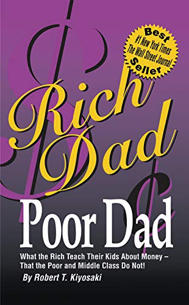

Robert T. Kiyosaki es un empresario, inversor y autor conocido principalmente por su libro Padre Rico, Padre Pobre, que se ha convertido en un clásico del desarrollo financiero personal. En este libro, Kiyosaki compara las enseñanzas que recibió de su "padre rico" (un amigo de su familia, un hombre de negocios exitoso) con las de su "padre pobre" (su propio padre, que era un hombre educado pero con una mentalidad más conservadora sobre el dinero). La filosofía de Kiyosaki está centrada en la importancia de la educación financiera, y promueve la idea de que la gente debe aprender a invertir y a gestionar activos en lugar de simplemente trabajar por un salario. Defiende que muchas personas, a pesar de tener un buen trabajo y una buena educación, no logran alcanzar la libertad financiera porque no tienen conocimientos sobre cómo manejar el dinero de forma efectiva.
Padre Rico, Padre Pobre es uno de los libros más famosos de Robert Kiyosaki, y es considerado por muchos como un pilar en la educación financiera. Fue publicado por primera vez en 1997 y, desde entonces, ha sido un éxito de ventas mundial. En este libro, Kiyosaki compara las filosofías sobre el dinero y la vida que aprendió de dos figuras clave en su vida: su "padre rico" (el padre de su mejor amigo, un hombre de negocios exitoso) y su "padre pobre" (su propio padre, que era una persona educada pero con una mentalidad más tradicional y conservadora en cuanto a finanzas). Aunque Padre Rico, Padre Pobre ha sido un éxito rotundo, también ha sido objeto de críticas. Algunas personas piensan que las ideas del libro son simplistas o incluso peligrosas, sobre todo la noción de que cualquiera puede volverse rico si sigue las enseñanzas del autor. Otros argumentan que el libro carece de detalles prácticos y que algunos de los ejemplos de Kiyosaki son más bien anecdóticos que basados en estudios o experiencias concretas.En resumen, Padre Rico, Padre Pobre es un libro que cambia la forma en que muchas personas piensan sobre el dinero, la inversión y la riqueza. Es especialmente útil para quienes buscan aprender los fundamentos de la educación financiera y tener una mentalidad más orientada hacia la creación de riqueza.
